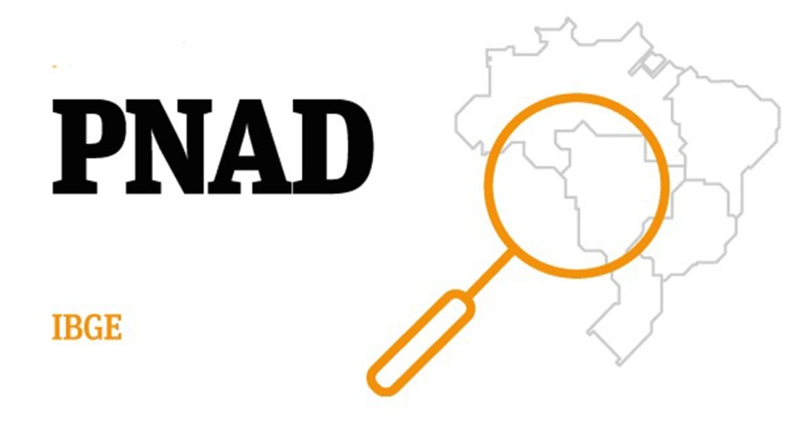
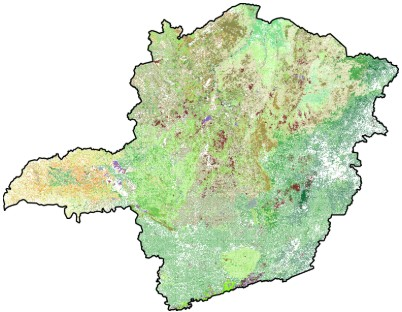

Nota sobre os Dados

As informações apresentadas aqui são coletadas a partir dos microdados da PNAD Contínua e tratadas pelo laboratório para análise acadêmica.
Projeto de Estudo
Este site apresenta dados básicos sobre a ocupação e o rendimento no setor florestal no estado de Minas Gerais.


As informações apresentadas aqui são coletadas a partir dos microdados da PNAD Contínua e tratadas pelo laboratório para análise acadêmica.
Confira abaixo os dados consolidados do primeiro trimestre:
| Região de MG | Trabalhadores Ocupados | Rendimento Médio (R$) |
|---|---|---|
| Sul de Minas | 45.000 | R$ 2.500,00 |
| Zona da Mata | 32.000 | R$ 2.300,00 |
| Norte de Minas | 28.000 | R$ 2.100,00 |